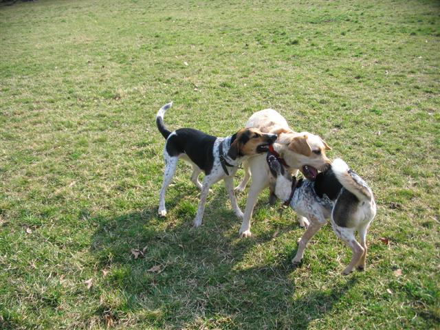
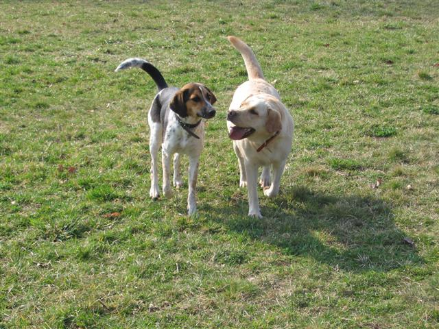
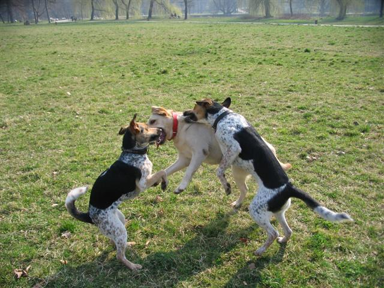
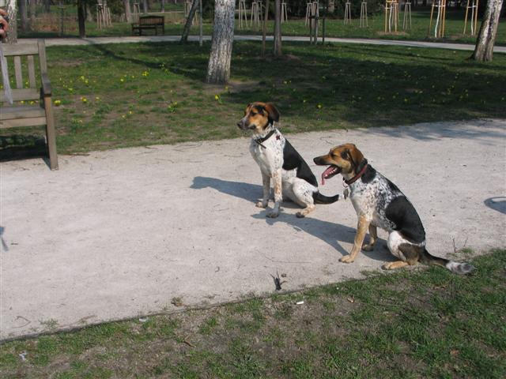
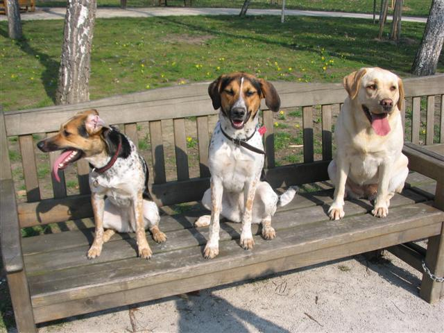
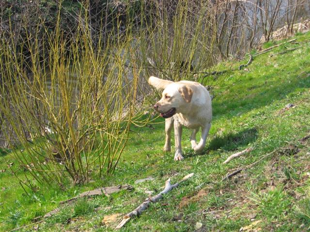
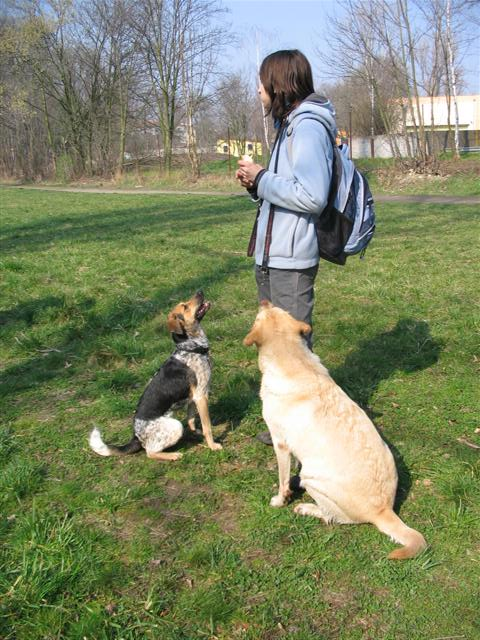
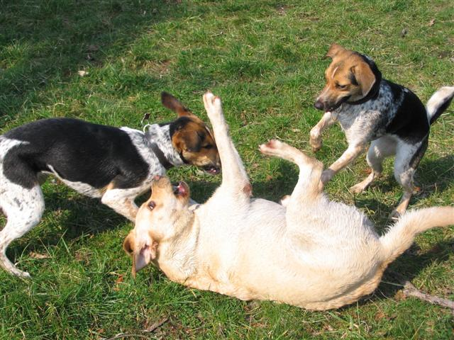
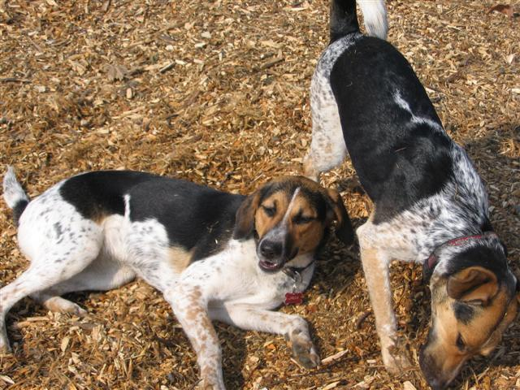
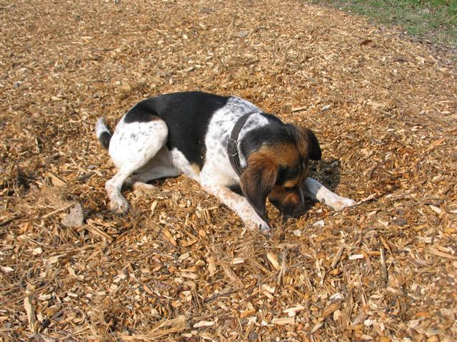

Navigace |
Strakatá procházka ve Stromovce č.2Jak vypadá procházka s jednou labradorkou a dvěma strakatýma? Ve složení Erin, Jaga a Nela tak, že z labradorky Erin visí dvě strakaté bestie Jaga s Nelou jako náušnice:-)  Po delší době jsme udělaly "strakaté promo" ve Stromovce - což znamená, že jsme uskutečnily společnou procházku s Hankou a Jagou a ohaře Bora tentokrát nahradila labradorka Erin se svojí paničkou.  Jaga s Erin, jsou to fešandy . Jaga s Nelou se sice na začátku pokusily dokázat si, kdo z nich má navrch, alepo okřiknutí usoudily (konečně), že jsme to my lidi (aspoň v to doufáme:-) ) Takže od zubení přešly k zdvořilé nevšímavosti, ale nejen to - postupně nejen kooperovaly při uhánění nebohé Erin, která jejich hrátky nesla velmi statečně a nakonec prohlubovaly svůj vzájemný vztah společným prohledáváním břehů a válením se na kůře.
 Akce.  Jaga s Nelou.
 Jazyky ven! Nela, Jaga a Erin.
 Erin po koupeli.
 Erin s Nelou nábožně hypnotizují Hančin rohlík. Erin se vůbec specializovala na jídlo a nezůstala jen u rohlíkz něhož si stihla ukousnout. ALe co by se spokojila se suchým rohlíkem, když byly o kus dál u rybářů k mání obložené housky, ty popadla všechny i s pytlíkem a o kus dál si je v klidu schroupala...zatímco my jsme se po anglicku vzdalovaly.  Packy ve vzduchu, tradiční Nelina technika.
 Harmonie a odpočinek na kůře.
 Jaga užívající si kůrovou kůru. Holky si užily nejen šarvátky, respektive vis na Erin, ale taky spoustu klacků, které jsou ve Stromovce ještě od lednového polomu. Vzhledem k jarnímu slunečnímu počasí (i když astronomicky vzato samozřejmě ještě jaro nebylo, ale aspoň nesněžilo, jako třeba dneska:-) ) se holky osvěžily ve slepém rameni, ale stihly i spoustu blátivých strouh, naštěstí v opačném pořadí, takže výsledné zablácení odpovídalo stavu, ve kterém jsme přišly:-) Procházka se moc povedla, tím spíš, že byla tříhodinová, takže splnila účel a unavila psiska. I když aspoň z osobní zkušenosti bych podotkla, že paničky taky. Detailní vyprávění si můžete přečíst také na stránkách Jagy.
|